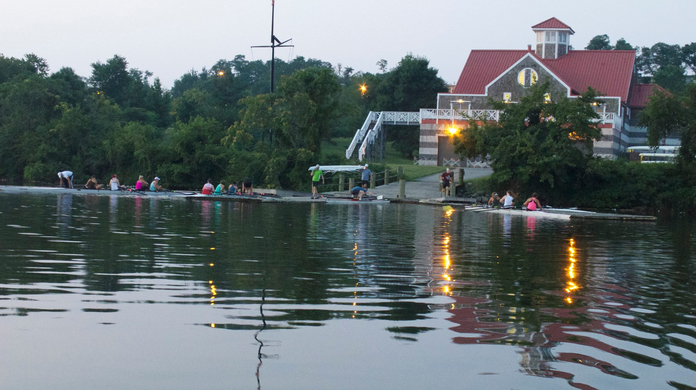

Learn the Traffic Pattern. It Will Help You Win Friends and Influence People.
Use this guide to keep from getting into trouble on the water.

Your Mileage May Vary.
How often should you look behind you? It depends on how busy it is, how fast you row, how confident you are with you stern position, and how much debris there is in the basin.
Going out at Night?
The traffic pattern stays the same, but you must have bow and stern lights on your boat. Your Kimmy Schmidt glitter shoes aren't enough.